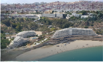
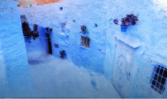
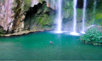
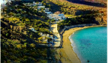
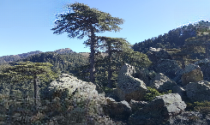
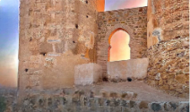
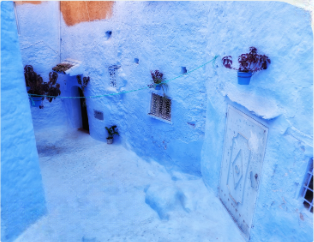

Le grand bleu PlageAl Hoceima
La baie de Quemado
La Méditerranée au pied de la ville. Une pause entre sable, falaises et eau turquoise.
Maroc du nord
Des criques turquoise aux ruelles bleues, prenez le temps de découvrir le Rif.
Al Hoceima, Maroc
Le Rif à votre rythme
La mer, les sommets ou une médina ? Suivez votre curiosité.

Le grand bleu PlageAl Hoceima
La Méditerranée au pied de la ville. Une pause entre sable, falaises et eau turquoise.

Mille nuances de bleu VilleChefchaouen
Des ruelles à parcourir sans se presser, des portes bleues et le Rif pour horizon.

L'appel de la nature NatureAkchour
Le bruit de l'eau, des sentiers rocheux et une parenthèse au cœur des montagnes.

Juste vous et l'horizon PlageTala Youssef
Le littoral rifain, un horizon ouvert et le plaisir simple de ralentir face à la mer.

Prendre de la hauteur NatureKetama
Des reliefs, des forêts et des routes de montagne pour découvrir un autre visage du nord.

Des pierres et des histoires PatrimoineTorres de Alcalá
Un patrimoine côtier à découvrir, entre vestiges, reliefs et vues sur la Méditerranée.
Six points de départ. À vous d'écrire la suite.

Plus près des lieux.
Plus près des gens.
L'esprit du Rif
Le Rif se découvre dans une ruelle, au bord d'une crique, sur un sentier.
Dans les paysages, bien sûr. Mais aussi dans les rencontres et les petits moments qu'on n'avait pas prévus.
Rif Explorer rassemble quelques idées pour partir à votre rythme.
Choisissez un lieu, gardez vos coups de cœur et laissez de la place à l'imprévu.
Un territoire, mille possibilités
6
destinations à découvrir
4
façons de s'évader
100%
envie d'explorer
Avant de partir
Quelques repères pour préparer
votre prochaine escapade.